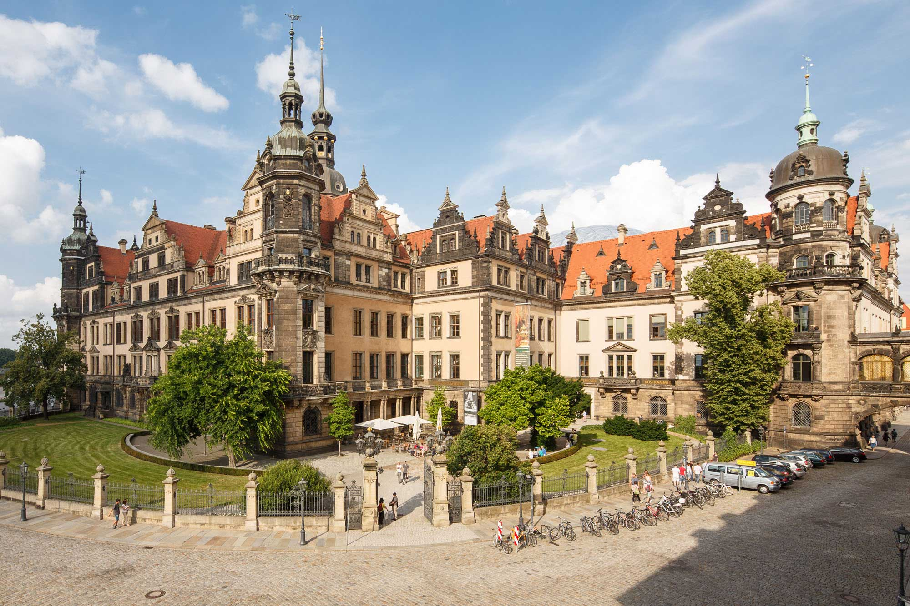

Über das Grüne Gewölbe
Das Grüne Gewölbe ist eine der ältesten und berühmtesten Schatzkammern Europas. Es befindet sich im Dresdner Residenzschloss und beherbergt eine einzigartige Sammlung von Kunstwerken, Schmuck und kostbaren Objekten. Die Sammlung ist in zwei Bereiche unterteilt: das Historische Grüne Gewölbe und das Neue Grüne Gewölbe.
Öffnungszeiten
Öffnungszeiten: Täglich von 10:00 bis 18:00 Uhr.
Eintrittspreise
Die Eintrittspreise für das Grüne Gewölbe sind wie folgt:
- Erwachsene: 12 €
- Ermäßigt: 8 €
- Familienkarte: 25 €
Kontakt
Für weitere Informationen können Sie das Grüne Gewölbe direkt kontaktieren:
Telefon: +49 351 491 4200
E-Mail:info[@]skd.museum
Besuchen Sie die offizielle Webseite: gruenes-gewoelbe.skd.museum